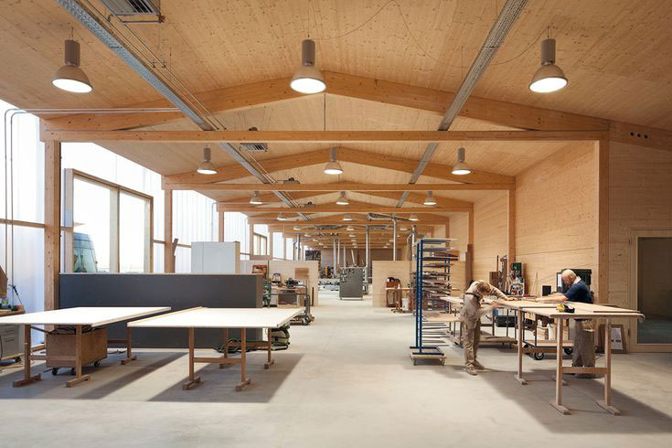

Willkommen bei Schreinerei Woodworkers
Die Schreinerei Woodworkers ist seit 1973 in Familienbesitz und steht für porfessionelle und präzise Handarbeit.
Das Arbeiten mit nachhaltigen und ökologischen Materialien steht für uns an erster Stelle. Stets versuchen wir das Beste für unsere Kunden und die Umwelt zu ermöglichen. Neben handgefertigten Möbeln bieten wir auch kleinere Reperaturarbeiten und Beratungsgepräche an.
Erfahren Sie mehr über unser Angebot und unsere Dienstleistungen und vereinbaren sie gerne einen Termin über das Kontaktformular
